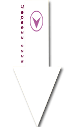
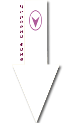
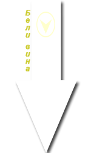
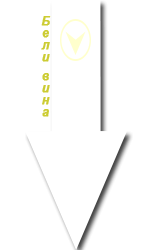

Това са сортовете, от които правим нашето червено и бяло вино
В изба "Шар планина" произвеждаме бяло и червено вино от характерни български и класически световни сортове. Макар и малки, покриващи почти единствено личните ни нужди от вино, нашите насаждения от червено и бяло грозде включват повечето класически за България червени и бели сортове. В рамките на малко повече от декар сме засадили мерло, мелник55, сира, вранец, сензо и керацуда.
Това разнообразие позволява да правим както чисто, така и купажно вино, което да пийваме с удоволствие и на което и нашите приятели да се радват.
По-долу може да научите подробности за нашите сортове и вина, да разгледате снимки и видеа.
Кликнете бърху буретата и на изскачащите картинки под тях, за да разгледате сортовите ни гами и винената ни гама от #реколта2019г.
 


 

Знаете ли, че:
* С времето белите вина насищат цвета си, а червените, напротив, стават по-светли.
* В топ 10 на страните, производители на вино попадат: Италия, Франция, Испания, САЩ, Аржентина, Австралия, Южна Африка и Германия.
* Чаша вино (около 150мл) съдържа около 85 калории.
* Червеното вино съдържа повече антиоксиданти от бялото и затова е по-полезно. Ключова съставка в червеното вино е ресвератролът.
* Дори умерено заклет поклонник на алкохолните напитки, каквато слава се носи на Уинстън Чърчил, е предпочитал българско червено вино, и по-специално от сорта широка мелнишка лоза. Нима можем да го упрекнем!
* Има медицинско състояние, известно като "Оенофобия" - т.нар. страх от виното. Хайде, наздраве, с пожелание никога да не чуваме тази диагноза, произнесена от лекуващия ни лекар...
И понеже почитта към виното ни обединява, настоящия сайт посвещаваме на интересните особености на нашите вина и на методите, чрез които ги произвеждаме ние - малкият екип на изба "Шар планина". Наздраве!